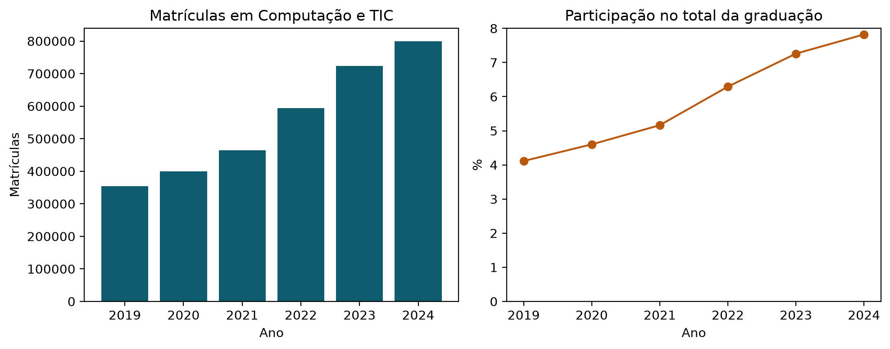
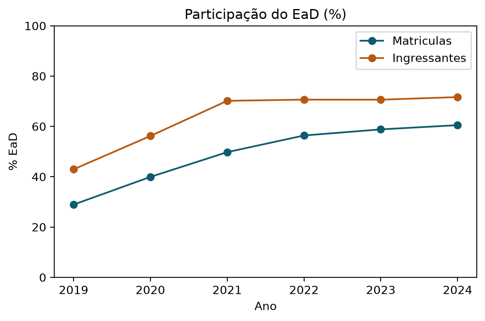
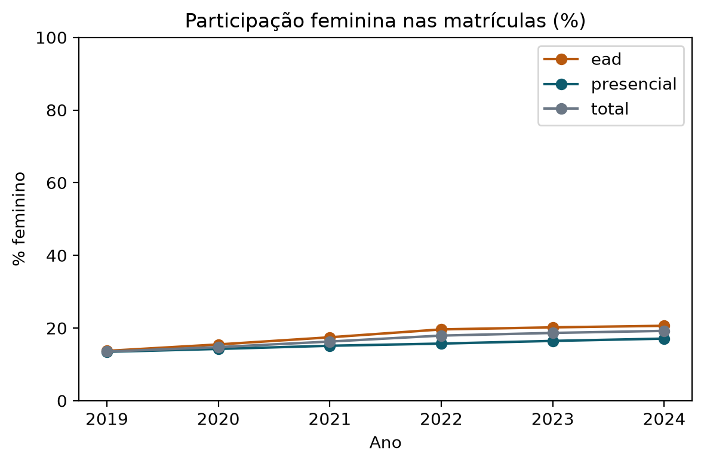

Resumo
O Censo da Educação Superior, realizado anualmente pelo INEP, é uma das principais fontes abertas sobre a graduação brasileira. Este estudo examina, nos microdados de 2019 a 2024, a área de Computação e TIC (área geral 06 da classificação Cine Brasil), quanto à evolução das matrículas, à participação do ensino a distância e à participação feminina, em comparação com o conjunto da graduação. O pipeline usa transformações determinísticas em Python, com dados em formato aberto e práticas orientadas pelos princípios FAIR. Entre 2019 e 2024, as matrículas em TIC passaram de 353.909 para 799.800 (+126,0%), e sua participação na graduação aumentou de 4,11% para 7,82%. O EaD passou de 28,92% para 60,49% das matrículas e de 42,94% para 71,66% dos ingressantes. A participação feminina subiu de 13,53% para 19,23%, permanecendo minoritária. A análise restringiu-se à graduação ofertada no Brasil, com agregação anual por modalidade, validação de integridade e estatística descritiva. Os resultados apontam a expansão relativa da área e a centralidade do EaD, além da persistência da desigualdade na composição por sexo. O estudo não identifica efeitos causais nem trajetórias individuais; os indicadores podem subsidiar investigações sobre acesso, permanência e oferta de formação tecnológica.
Palavras-chave: Censo da Educação Superior; Computação e TIC; ensino a distância; participação feminina; microdados; FAIR.
Abstract
This study examines Brazilian higher education in computing and information and communication technologies (ICT), using INEP census microdata from 2019 to 2024. A reproducible Python pipeline aggregates domestic undergraduate enrollments and entrants by year and mode of instruction. Enrollment rose from 353,909 to 799,800 (126.0%), while its share of all undergraduate enrollments increased from 4.11% to 7.82%. Distance education accounted for 60.49% of ICT enrollments and 71.66% of entrants in 2024, up from 28.92% and 42.94% in 2019. Female representation increased from 13.53% to 19.23%, remaining a minority in both modes. The results describe changes in the composition of higher education without establishing causal effects or individual trajectories. Integrity checks, documented filters and open-format outputs support transparency and reproducibility.
Keywords: higher education census; computing and ICT; distance education; female participation; microdata; FAIR.
1 Introdução
O Censo da Educação Superior é realizado anualmente pelo Instituto Nacional de Estudos e Pesquisas Educacionais Anísio Teixeira (INEP) e fornece informações para a formulação, o monitoramento e a avaliação de políticas públicas (SARAIVA et al., 2023). Os microdados são divulgados em formato aberto, e a página oficial do INEP oferece as edições de 2019 a 2024 (INEP, [s.d.]).
A área de Computação e TIC já foi examinada com esses dados. Saraiva et al. (2023) apresentam um panorama dos cursos de TIC entre 2015 e 2021, que inclui evasão e distribuição regional. Cursino e Martinez (2021) analisam a inserção de mulheres em cursos de TI entre 2009 e 2018, partindo da constatação de que a área é ocupada majoritariamente por homens. Entre os trabalhos citados aqui, as séries terminam em 2018 e 2021. Este artigo cobre 2019–2024 e acompanha dois eixos, modalidade de ensino e sexo, com comparação ao conjunto da graduação na evolução das matrículas.
1.1 Delimitação do objeto
Computação e TIC corresponde à área geral 06 da classificação Cine Brasil, em qualquer grau acadêmico, respeitando a classificação original dos cursos, sem reagrupamento por nome. O código 06 e seu rótulo foram observados nos seis arquivos.
1.2 Perguntas de pesquisa
- RQ1. Como evoluíram as matrículas em Computação e TIC, em números absolutos e proporcionalmente ao total de matrículas da graduação brasileira?
- RQ2. Como evoluiu a participação do EaD nas matrículas e nos ingressos de Computação e TIC?
- RQ3. Como evoluiu a participação feminina nas matrículas de Computação e TIC, considerando as modalidades presencial e a distância?
2 Metodologia e pipeline de dados
2.1 Fonte e granularidade
Fonte primária: microdados do Censo da Educação Superior (INEP), edições 2019 a 2024. Os CSVs de cadastro de cursos são registros agregados por curso e dimensão geográfica, não registros individuais. O inventário registrou 3.007.594 linhas brutas; a saída contém 24 linhas, uma por ano, escopo e modalidade.
2.2 Tratamento dos dados
Princípios adotados: códigos categóricos preservados como texto; registro de URL, data de registro no manifesto e SHA-256 de cada arquivo; contagem de registros antes e depois de qualquer filtro; nenhuma regra de agregação ou deduplicação sem fundamento na documentação oficial. CSV separado por ponto e vírgula, lido em Latin-1. Foram retidos nível acadêmico 1 e dimensões 1 e 2; a dimensão 3 não contém valores positivos nas métricas analisadas e a 4 representa oferta no exterior. Não houve imputação nas linhas retidas nem deduplicação por código de curso. Os quatro campos quantitativos são inteiros não negativos; a soma feminina e masculina coincide com o total. O relatório de integridade versionado registra correspondência nos 12 MD5 distribuídos nos ZIPs; a aquisição manual não registrou instante exato de download nem cabeçalhos HTTP. A validação externa integral permanece pendente.
2.3 Indicadores
Sejam M o número de matrículas, I o de ingressantes, F e H as matrículas dos sexos feminino e masculino, e t o ano.
RQ1: participação_t = 100 × M(Computação e TIC, t) / M(graduação, t)
RQ1: CAGR = (M_final / M_inicial)^(1/n) − 1, com n = número de anos entre os extremos
RQ2: %EaD_t = 100 × EaD_t / (presencial_t + EaD_t), calculado para M e para I
RQ3: %feminino_t = 100 × F_t / (F_t + H_t), por modalidade e no total
Variações de percentuais são reportadas em pontos percentuais (p.p.). Os valores absolutos e as proporções são calculados sobre a tabela agregada definida no contrato de dados do repositório.
2.4 Código
A análise usa NumPy (HARRIS et al., 2020) e pandas (MCKINNEY, 2010); os gráficos usam Matplotlib (HUNTER, 2007) e Plotly (PLOTLY TECHNOLOGIES INC., [s.d.]). As versões e instruções de execução constam no repositório.
Exemplo da lógica de indicadores (função rq2, src/analysis.py):
def rq2(df: pd.DataFrame, escopo: str = "computacao_tic") -> pd.DataFrame:
"""Participação do EaD (%) em matrículas e ingressantes, por ano."""
partes = []
for indicador, col in (("matriculas", "qt_mat"), ("ingressantes", "qt_ing")):
p = df[df.escopo == escopo].pivot_table(index="ano", columns="modalidade", values=col, aggfunc="sum")
partes.append(pd.DataFrame({
"ano": p.index, "escopo": escopo, "indicador": indicador,
"qt_ead": p["ead"].to_numpy(), "qt_total": p.sum(axis=1).to_numpy(),
"pct_ead": 100 * p["ead"].to_numpy() / p.sum(axis=1).to_numpy(),
}))
out = pd.concat(partes, ignore_index=True)
out["delta_pp"] = out.groupby("indicador").pct_ead.diff()
return outO ETL usa o filtro de graduação e dimensões 1 e 2, seguido de soma por ano e modalidade (src/etl.py).
2.5 Testes com dados sintéticos
As funções de análise e de visualização foram testadas com dados sintéticos aleatórios (src/synthetic.py), rotulados, com marca d’água nas figuras e separados dos resultados. Nenhum resultado deste artigo deriva desses dados.
3 Resultados e discussão
3.1 RQ1: matrículas em Computação e TIC

Visualizar versão estática

As matrículas cresceram 126,0%, contra 18,86% no total da graduação, e a participação da área aumentou 3,71 p.p. O crescimento anual mais forte foi em 2022 (28,09%); a taxa composta anual foi de aproximadamente 17,7%. Isso indica expansão relativa da área, sem demonstrar suas causas.
3.2 RQ2: participação do EaD

Visualizar versão estática

O EaD passou de 28,92% a 60,49% das matrículas (+31,58 p.p.) e de 42,94% a 71,66% dos ingressantes (+28,72 p.p.). A modalidade tornou-se majoritária entre ingressantes em 2020 e entre matrículas em 2022. A ampliação da oferta remota é compatível com a expansão observada, mas não permite atribuí-la à pandemia ou a políticas específicas.
3.3 RQ3: participação feminina

Visualizar versão estática

A participação feminina total avançou de 13,53% a 19,23% (+5,70 p.p.). Em 2024, alcançou 17,09% no presencial e 20,62% no EaD. A diferença entre modalidades não demonstra que o EaD cause maior inclusão: composição dos cursos, perfis e condições de acesso podem contribuir. A maioria das matrículas ainda é masculina.
4 Conclusão
A área de Computação e TIC cresceu em termos absolutos e relativos, com predominância crescente do EaD e aumento da participação feminina, embora esta permaneça minoritária. Os resultados sugerem a importância de investigar mecanismos de acesso e permanência na formação tecnológica.
Limitações e trabalhos futuros
Matrículas não equivalem a pessoas únicas; os dados agregados não permitem acompanhar evasão individual, rendimento ou inserção profissional. A variável sexo tem as duas categorias usadas pelo INEP. O recorte exclui oferta no exterior e a reconciliação externa integral está pendente. Mudanças de classificação e coleta não foram auditadas em nível de curso. Estudos futuros podem examinar região, grau acadêmico, conclusão e permanência, com dados adequados.
5 Disponibilidade dos dados e declaração FAIR
A organização do repositório é orientada pelos princípios FAIR (WILKINSON et al., 2016). Localizável: título, palavras-chave, autoria e fonte oficial. Acessível: código, instruções e artigo em repositório público após publicação. Interoperável: Parquet, CSV, JSON e dicionário de dados. Reutilizável: dependências congeladas, código MIT e filtros documentados; os dados de terceiros permanecem sujeitos aos termos da fonte, sem atribuição de licença própria. A política de dados abertos do INEP descreve o reuso com crédito da autoria ou fonte; uma licença específica dos pacotes utilizados não foi confirmada. Não foi realizada avaliação formal de conformidade FAIR.
git clone https://github.com/whitte77/censo-superior-tic.git
cd censo-superior-tic
python3.12 -m venv .venv
source .venv/bin/activate
pip install -r requirements.txt
python -m src.download
# Se TLS falhar, obtenha os ZIPs manualmente (README).
mkdir -p data/processed/audit
python -m src.integrity
python -m src.inventory
python -m src.schema
python -m src.profile
python -m src.etl
python -m nbconvert --to notebook --execute --inplace notebooks/analise_exploratoria.ipynb6 Referências
- CURSINO, Ariana R.; MARTINEZ, Juliana F. P. Análise estatística descritiva e regressão da inserção das mulheres nos cursos de TI nos anos de 2009 a 2018. In: WOMEN IN INFORMATION TECHNOLOGY (WIT), 15., 2021, Evento online. Anais [...]. Porto Alegre: SBC, 2021. p. 21–30. DOI: 10.5753/wit.2021.15838. Disponível em: https://sol.sbc.org.br/index.php/wit/article/view/15838.
- HARRIS, Charles R. et al. Array programming with NumPy. Nature, v. 585, p. 357–362, 2020. DOI: 10.1038/s41586-020-2649-2.
- HUNTER, John D. Matplotlib: a 2D graphics environment. Computing in Science & Engineering, v. 9, n. 3, p. 90–95, 2007. DOI: 10.1109/MCSE.2007.55.
- INSTITUTO NACIONAL DE ESTUDOS E PESQUISAS EDUCACIONAIS ANÍSIO TEIXEIRA (INEP). Microdados do Censo da Educação Superior. Brasília: INEP, [s.d.]. Disponível em: https://www.gov.br/inep/pt-br/acesso-a-informacao/dados-abertos/microdados/censo-da-educacao-superior. Acesso em: 19 nov. 2026.
- MCKINNEY, Wes. Data structures for statistical computing in Python. In: PYTHON IN SCIENCE CONFERENCE, 9., 2010. Proceedings [...], 2010. p. 56–61. DOI: 10.25080/Majora-92bf1922-00a.
- PLOTLY TECHNOLOGIES INC. Open Source Python Graphing and Data Visualization Library. [s.d.]. Disponível em: https://plotly.com/python/. Acesso em: 19 nov. 2026.
- SARAIVA, Raphael; SOARES, Pamella; ARAÚJO, Allysson Allex; SOUZA, Jerffeson. Análise descritiva dos microdados do Censo da Educação Superior do INEP para cursos de Tecnologia da Informação e Comunicação no Brasil — Um panorama 2015-2021. In: WORKSHOP SOBRE EDUCAÇÃO EM COMPUTAÇÃO (WEI), 31., 2023, João Pessoa. Anais [...]. Porto Alegre: SBC, 2023. p. 443–453. DOI: 10.5753/wei.2023.229974. Disponível em: https://sol.sbc.org.br/index.php/wei/article/view/24924.
- WILKINSON, Mark D. et al. The FAIR Guiding Principles for scientific data management and stewardship. Scientific Data, v. 3, art. 160018, 2016. DOI: 10.1038/sdata.2016.18.